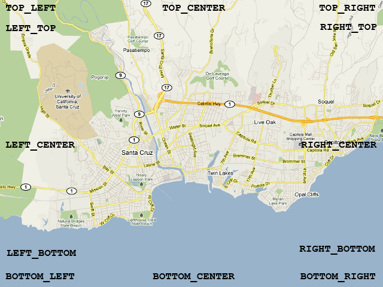

©2010 Google -
Code Home -
Terms of Service -
Privacy Policy -
Site Directory
Google Code offered in:
English -
Español -
日本語 -
한국어 -
Português -
Pусский -
中文(简体) -
中文(繁體)
Maps Javascript API V3
- Home Page
- API Reference
Code Samples:
More Resources:
Maps Javascript API V2
(Deprecated API)
Maps API for Flash
Maps Data API
(Deprecated API)
Static Maps API
Earth API
Local Search API
(Deprecated API)
Same great maps plus a SLA, support, and control over ads
Google Maps Javascript API V3 Controls
Note: The Google Maps Javascript API Version 3 documented within these pages is now the official Javascript API. Version 2 of this API has been officially deprecated as per our deprecation policy. We encourage you to migrate your code to this newly updated and enhanced version!
Controls Overview
The maps on Google Maps contain UI elements for allowing user interaction through the map. These elements are known as controls and you can include variations of these controls in your Google Maps API application. Alternatively, you can do nothing and let the Google Maps API handle all control behavior.
The Maps API comes with a handful of built-in controls you can use in your maps:
- The Navigation control displays a large pan/zoom control as used on Google Maps. This control appears by default in the top left corner of the map.
- The Scale control displays a map scale element. This control is not enabled by default.
- The MapType control lets the user toggle between map types
(such as
ROADMAPandSATELLITE). This control appears by default in the top right corner of the map.
You don't access or modify these map controls directly. Instead, you
modify the map's MapOptions fields which affect the visibility
and presentation of controls. You can adjust control presentation upon
instantiating your map (with appropriate MapOptions) or modify a
map dynamically by calling setOptions() to change the map's
options.
Not all of these controls are enabled by default. To learn about default UI behavior (and how to modify such behavior), see The Default UI below.
The Default UI
Rather than specifying and setting up individual controls, you may simply wish to specify that your map exhibit the look and feel of the Google Maps interface, (including any new features or controls that get added in the future). To get this behavior, you need do nothing. Your map will show up with default controls.
The Default Control Set
The Maps API provides the following default controls:
| Control | Large Screens | Small Screens | iPhone | Android |
|---|---|---|---|---|
| Navigation | Large Pan/Zoom for sizes larger than 400x350px | Small Mini-Zoom for sizes smaller than 400x350px | Not present | "Android" control |
| MapType | Horizontal Bar for screens larger than 320px wide | Dropdown for screens smaller than 320px wide | Same as Large/Small Screens | Same as Large/Small Screens |
| Scale | Not present | Not present | Not present | Not present |
Additionally, keyboard handling is on by default on all devices.
Disabling the Default UI
You may instead wish to turn off the API's default UI settings. To do so,
set the Map's disableDefaultUI property (within the
Map options object) to true. This property
disables any automatic UI behavior from the Google Maps API.
The following code disables the default UI entirely:
function initialize() {
var myOptions = {
zoom: 4,
center: new google.maps.LatLng(-33, 151),
disableDefaultUI: true,
mapTypeId: google.maps.MapTypeId.ROADMAP
}
var map = new google.maps.Map(document.getElementById("map_canvas"),
myOptions);
}
View example (control-disableUI.html)
Adding Controls to the Map
You may wish to tailor your interface by removing, adding, or modifying UI behavior or controls and ensure that future updates don't alter this behavior. If you wish to only add or modify existing behavior, you need to ensure that the control is explicitly added to your application.
Some controls appear on the map by default while others will not appear
unless you specifically request them. Adding or removing controls from the map
is specified in the following Map options object's fields,
which you set to true to make them visible or set to
false to hide them:
{
navigationControl: boolean,
mapTypeControl: boolean,
scaleControl: boolean
}
Note that the Maps API V3 does not currently allow you to dynamically add
or remove controls. These must be set upon creation of the map through a
Map options object.
The following example sets the map to hide the navigation control and display the scale control. Note that we do not explicitly disable the default UI, so these modifications are additive to the default UI behavior.
function initialize() {
var myOptions = {
zoom: 4,
center: new google.maps.LatLng(-33, 151),
navigationControl: false,
scaleControl: true,
mapTypeId: google.maps.MapTypeId.ROADMAP
}
var map = new google.maps.Map(document.getElementById("map_canvas"),
myOptions);
}
View example (control-simple.html)
Control Options
Several controls are configurable, allowing you to alter their behavior or change their appearance. The Navigation control, for example, may display as either a large control with a full zoom control and panning controls as shown on Google Maps, or as a smaller, mini-zoom control for smaller devices.
These controls are modified by altering appropriate control options
fields within the MapOptions object upon creation of the map. For
example, options for altering the Navigation control are
indicated in the navigationControlOptions field.
The Navigation control may appear in one of the following
style options:
google.maps.NavigationControlStyle.SMALLdisplays a mini-zoom control, consisting of only + and - buttons. This style is appropriate for mobile devices.google.maps.NavigationControlStyle.ZOOM_PANdisplays the standard zoom slider control with a panning control, as on Google Maps.google.maps.NavigationControlStyle.ANDROIDdisplays the small zoom control as used on the native Maps application on Android devices.google.maps.NavigationControlStyle.DEFAULTpicks an appropriate navigation control based on the map's size and the device on which the map is running.
The MapType control may appear in one of the following
style options:
google.maps.MapTypeControlStyle.HORIZONTAL_BARdisplays the array of controls as buttons in a horizontal bar as is shown on Google Maps.google.maps.MapTypeControlStyle.DROPDOWN_MENUdisplays a single button control allowing you to select the map type via a dropdown menu.google.maps.MapTypeControlStyle.DEFAULTdisplays the "default" behavior, which depends on screen size and may change in future versions of the API
Note that if you do modify any control options, you should
explicitly enable the control as well by setting the appropriate
MapOptions value to true. For example,
to set a Navigation control to exhibit the SMALL
style, use the following code within the MapOptions object:
...
navigationControl: true,
navigationControlOptions: {
style: google.maps.NavigationControlStyle.SMALL
}
...
The following example sets a drop-down MapType control and specifies that the Navigation control use a small mini-zoom layout:
function initialize() {
var myOptions = {
zoom: 4,
center: new google.maps.LatLng(-33, 151),
mapTypeControl: true,
mapTypeControlOptions: {
style: google.maps.MapTypeControlStyle.DROPDOWN_MENU
},
navigationControl: true,
navigationControlOptions: {
style: google.maps.NavigationControlStyle.SMALL
},
mapTypeId: google.maps.MapTypeId.ROADMAP
}
var map = new google.maps.Map(document.getElementById("map_canvas"),
myOptions);
}
View example (control-options.html)
Controls are typically configured upon creation of the map. However,
you may alter the presentation of controls dynamically by
calling the Map's setOptions() method,
passing it new control options.
Modifying Controls
You specify a control's presentation when you create your map
through fields within the map's MapOptions object. These
fields are denoted below:
mapTypeControlenables/disables the Map Type control that lets the user toggle between map types (such as Map and Satellite). By default, this control is visible and appears in the top right corner of the map. ThemapTypeControlOptionsfield additionally specifies theMapTypeControlOptionsto use for this control.navigationControlenables/disables the Navigation control that provides a pan/zoom control. By default, this control is visible and appears in the top left corner of the map. ThenavigationControlOptionsfield additionally specifies theNavigationControlOptionsto use for this control.scaleControlenables/disables the Scale control that provides a simple map scale. By default, this control is not visible. When enabled, it appears in the bottom left corner of the map. ThescaleControlOptionsadditionally specifies theScaleControlOptionsto use for this control.
Note that you may specify options for controls you initially disable.
Control Positioning
Each of these control options contains a position property
(of type ControlPosition) which indicates where on the map to
place the control. Positioning of these controls is not absolute; instead, the
API will layout the controls intelligently by "flowing" them around existing
map elements, or other controls, within given constraints (such as the map
size). Note: no guarantees can be made that
controls may not overlap given complicated layouts, though the API will
attempt to arrange them intelligently.
The following control positions are supported:
TOP_CENTERindicates that the control should be placed along the top center of the map.TOP_LEFTindicates that the control should be placed along the top left of the map, with any sub-elements of the control "flowing" towards the top center.TOP_RIGHTindicates that the control should be placed along the top right of the map, with any sub-elements of the control "flowing" towards the top center.LEFT_TOPindicates that the control should be placed along the top left of the map, but below anyTOP_LEFTelements.RIGHT_TOPindicates that the control should be placed along the top right of the map, but below anyTOP_RIGHTelements.LEFT_CENTERindicates that the control should be placed along the left side of the map, centered between theTOP_LEFTandBOTTOM_LEFTpositions.RIGHT_CENTERindicates that the control should be placed along the right side of the map, centered between theTOP_RIGHTandBOTTOM_RIGHTpositions.LEFT_BOTTOMindicates that the control should be placed along the bottom left of the map, but above anyBOTTOM_LEFTelements.RIGHT_BOTTOMindicates that the control should be placed along the bottom right of the map, but above anyBOTTOM_RIGHTelements.BOTTOM_CENTERindicates that the control should be placed along the bottom center of the map.BOTTOM_LEFTindicates that the control should be placed along the bottom left of the map, with any sub-elements of the control "flowing" towards the bottom center.BOTTOM_RIGHTindicates that the control should be placed along the bottom right of the map, with any sub-elements of the control "flowing" towards the bottom center.

Note that these positions may coincide with positions of UI elements whose placements you may not modify (such as copyrights and the Google logo). In those cases, the controls will "flow" according to the logic noted for each position and appear as close as possible to their indicated position.
The following example shows a simple map with all controls enabled, in different positions.
function initialize() {
var myOptions = {
zoom: 12,
center: new google.maps.LatLng(-28.643387, 153.612224),
mapTypeId: google.maps.MapTypeId.ROADMAP,
mapTypeControl: true,
mapTypeControlOptions: {
style: google.maps.MapTypeControlStyle.HORIZONTAL_BAR,
position: google.maps.ControlPosition.BOTTOM
},
navigationControl: true,
navigationControlOptions: {
style: google.maps.NavigationControlStyle.ZOOM_PAN,
position: google.maps.ControlPosition.TOP_RIGHT
},
scaleControl: true,
scaleControlOptions: {
position: google.maps.ControlPosition.TOP_LEFT
}
}
var map = new google.maps.Map(document.getElementById("map_canvas"),
myOptions);
}
View example (control-positioning.html)
Custom Controls
As well as modifying the style and position of existing API controls, you
can create your own controls to handle interaction with the user. Controls are
stationary widgets which float on top of a map at absolute positions, as
opposed to overlays, which move with the underlying map. More
fundamentally, a control is simply a <div> element which
has an absolute position on the map, displays some UI to the user, and handles
interaction with either the user or the map, usually through an event
handler.
To create your own custom control, few "rules" are necessary. However, the following guidelines can act as best practices:
- Define appropriate CSS for the control element(s) todisplay.
- Handle interaction with the user or the map through event handlers for
either map property changes or user events (e.g.
'click'events). - Create a
<div>element to hold the control and add this element to theMap'scontrolsproperty.
Each of these concerns is discussed below.
Drawing Custom Controls
How you draw your control is up to you. Generally, we recommend that you
place all of your control presentation within a single
<div> element so that you can manipulate your control as
one unit. We will use this design pattern in the samples shown below.
Designing attractive controls requires some knowledge of CSS and DOM
structure. The following code shows how a simple control is created from a
containing <div>, a <div> to hold the
button outline, and another <div> to hold the button
interior.
// Create a div to hold the control.
var controlDiv = document.createElement('DIV');
// Set CSS styles for the DIV containing the control
// Setting padding to 5 px will offset the control
// from the edge of the map
controlDiv.style.padding = '5px';
// Set CSS for the control border
var controlUI = document.createElement('DIV');
controlUI.style.backgroundColor = 'white';
controlUI.style.borderStyle = 'solid';
controlUI.style.borderWidth = '2px';
controlUI.style.cursor = 'pointer';
controlUI.style.textAlign = 'center';
controlUI.title = 'Click to set the map to Home';
controlDiv.appendChild(controlUI);
// Set CSS for the control interior
var controlText = document.createElement('DIV');
controlText.style.fontFamily = 'Arial,sans-serif';
controlText.style.fontSize = '12px';
controlText.style.paddingLeft = '4px';
controlText.style.paddingRight = '4px';
controlText.innerHTML = 'Home';
controlUI.appendChild(controlText);
Handling Events from Custom Controls
For a control to be useful, it must actually do something. What the control
does is up to you. The control may respond to user input, or it may respond to
changes in the Map's state.
For responding to user input, the Maps API provides a cross-browser event
handling method addDomListener() which handles most of the
browser's supported DOM
events. The following code snippet adds a listener for the browser's
'click' event. Note that this event is received from the DOM, not
from the map.
// Setup the click event listener: simply set the map to center on Chicago
var chicago = new google.maps.LatLng(41.850033, -87.6500523);
google.maps.event.addDomListener(outer, 'click', function() {
map.setCenter(chicago)
});
Positioning Custom Controls
Custom controls are positioned on the map by placing them at appropriate
positions within the Map object's controls property.
This property contains an array of google.maps.ControlPositions.
You add a custom control to the map by adding the Node (typically
the <div>) to an appropriate ControlPosition.
(For information on these positions, see Control
Positioning above.)
Each ControlPosition stores an MVCArray of the
controls displayed in that position. As a result, when controls are added or
removed from the position, the API will update the controls accordingly.
The API places controls at each position by the order of an
index property; controls with a lower index are placed first. For
example, two custom controls at position BOTTOM_RIGHT will be
laid out according to this index order, with lower index values taking
precedence. By default, all custom controls are placed after placing
any API default controls. You can override this behavior by setting a
control's index property to be a negative value. Note that you
will normally only need to set an index value if you wish to place your
control "before" a default API control in the same position.
The following code creates a new custom control (its constructor is not
shown) and adds it to the map in the TOP_RIGHT position.
var map = new google.maps.Map(document.getElementById('map_canvas'), mapOptions);
// Construct your control in whatever manner is appropriate.
// Generally, your constructor will want access to the
// DIV on which you'll attach the control UI to the Map.
var controlDiv = document.createElement('DIV');
var myControl = new MyControl(controlDiv);
// We don't really need to set an index value here, but
// this would be how you do it. Note that we set this
// value as a property of the DIV itself.
controlDiv.index = 1;
// Add the control to the map at a designated control position
// by pushing it on the position's array. This code will
// implicitly add the control to the DOM, through the Map
// object. You should not attach the control manually.
map.controls[google.maps.ControlPosition.TOP_RIGHT].push(controlDiv);
A Custom Control Example
The following control is simple (though not particularly useful) and
combines the patterns shown above. This control responds to DOM
'click' events by centering the map at a certain default
location:
var map;
var chicago = new google.maps.LatLng(41.850033, -87.6500523);
/**
* The HomeControl adds a control to the map that simply
* returns the user to Chicago. This constructor takes
* the control DIV as an argument.
*/
function HomeControl(controlDiv, map) {
// Set CSS styles for the DIV containing the control
// Setting padding to 5 px will offset the control
// from the edge of the map
controlDiv.style.padding = '5px';
// Set CSS for the control border
var controlUI = document.createElement('DIV');
controlUI.style.backgroundColor = 'white';
controlUI.style.borderStyle = 'solid';
controlUI.style.borderWidth = '2px';
controlUI.style.cursor = 'pointer';
controlUI.style.textAlign = 'center';
controlUI.title = 'Click to set the map to Home';
controlDiv.appendChild(controlUI);
// Set CSS for the control interior
var controlText = document.createElement('DIV');
controlText.style.fontFamily = 'Arial,sans-serif';
controlText.style.fontSize = '12px';
controlText.style.paddingLeft = '4px';
controlText.style.paddingRight = '4px';
controlText.innerHTML = 'Home';
controlUI.appendChild(controlText);
// Setup the click event listeners: simply set the map to Chicago
google.maps.event.addDomListener(controlUI, 'click', function() {
map.setCenter(chicago)
});
}
function initialize() {
var mapDiv = document.getElementById('map_canvas');
var myOptions = {
zoom: 12,
center: chicago,
mapTypeId: google.maps.MapTypeId.ROADMAP
}
map = new google.maps.Map(mapDiv, myOptions);
// Create the DIV to hold the control and call the HomeControl() constructor
// passing in this DIV.
var homeControlDiv = document.createElement('DIV');
var homeControl = new HomeControl(homeControlDiv, map);
homeControlDiv.index = 1;
map.controls[google.maps.ControlPosition.TOP_RIGHT].push(homeControlDiv);
}
View example (control-custom.html)
Adding State to Controls
Controls may also store state. The following example is similar to that
shown before, but the control contains an additional "Set Home" button which
sets the control to exhibit a new home location. We do so by creating a
home_ property within the control to store this state and provide
getters and setters for that state.
var map;
var chicago = new google.maps.LatLng(41.850033, -87.6500523);
/**
* The HomeControl adds a control to the map that
* returns the user to the control's defined home.
*/
// Define a property to hold the Home state
HomeControl.prototype.home_ = null;
// Define setters and getters for this property
HomeControl.prototype.getHome = function() {
return this.home_;
}
HomeControl.prototype.setHome = function(home) {
this.home_ = home;
}
function HomeControl(map, div, home) {
// Get the control DIV. We'll attach our control UI to this DIV.
var controlDiv = div;
// We set up a variable for the 'this' keyword since we're adding event
// listeners later and 'this' will be out of scope.
var control = this;
// Set the home property upon construction
control.home_ = home;
// Set CSS styles for the DIV containing the control. Setting padding to
// 5 px will offset the control from the edge of the map
controlDiv.style.padding = '5px';
// Set CSS for the control border
var goHomeUI = document.createElement('DIV');
goHomeUI.title = 'Click to set the map to Home';
controlDiv.appendChild(goHomeUI);
// Set CSS for the control interior
var goHomeText = document.createElement('DIV');
goHomeText.innerHTML = 'Home';
goHomeUI.appendChild(goHomeText);
// Set CSS for the setHome control border
var setHomeUI = document.createElement('DIV');
setHomeUI.title = 'Click to set Home to the current center';
controlDiv.appendChild(setHomeUI);
// Set CSS for the control interior
var setHomeText = document.createElement('DIV');
setHomeText.innerHTML = 'Set Home';
setHomeUI.appendChild(setHomeText);
// Setup the click event listener for Home:
// simply set the map to the control's current home property.
google.maps.event.addDomListener(goHomeUI, 'click', function() {
var currentHome = control.getHome();
map.setCenter(currentHome);
});
// Setup the click event listener for Set Home:
// Set the control's home to the current Map center.
google.maps.event.addDomListener(setHomeUI, 'click', function() {
var newHome = map.getCenter();
control.setHome(newHome);
});
}
function initialize() {
var mapDiv = document.getElementById('map_canvas');
var myOptions = {
zoom: 12,
center: chicago,
mapTypeId: google.maps.MapTypeId.ROADMAP
}
map = new google.maps.Map(mapDiv, myOptions);
// Create the DIV to hold the control and call the HomeControl()
// constructor passing in this DIV.
var homeControlDiv = document.createElement('DIV');
var homeControl = new HomeControl(map, homeControlDiv, chicago);
homeControlDiv.index = 1;
map.controls[google.maps.ControlPosition.TOP_RIGHT].push(homeControlDiv);
}